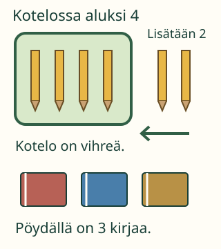

<link rel="stylesheet" href="lesson.css">
<section data-relevance-lesson>

<section data-teaching-step="1" data-lesson-role="teaching-step">
<p> Aava järjestää kynäkoteloa. Tilanteesta tiedetään monta asiaa. Mitkä niistä auttavat vastaamaan juuri meidän kysymykseemme?</p>
<h2>Kysymys ohjaa katsetta</h2>
<p><strong>Tavoitteesi:</strong> Huomaat, mitä tietoa kysymykseen tarvitaan, ja kokoat sen yhteen.</p>
</section>


<section data-teaching-step="2" data-lesson-role="teaching-step">
<h3>1. Kaikkia lukuja ei tarvita</h3>
<p>Kotelossa on aluksi neljä kynää. Aava lisää sinne kaksi kynää. Kotelo on vihreä. Pöydällä on kolme kirjaa. Kysymys on: <strong>montako kynää kotelossa on lopuksi?</strong></p>
<figure data-lesson-role="worked-example"><figcaption>Ensin selvitetään, mitä kysytään. Sitten etsitään siihen liittyvät tiedot.</figcaption></figure>
<p>Kynien alkumäärä ja lisättyjen kynien määrä tarvitaan. Kirjojen määrä on myös luku, mutta se ei kerro kotelon kynistä. Kotelon väri ei muuta tätä kynämäärää. Kun tarvittavat tiedot ovat koossa, lasku olisi 4 + 2 = 6.</p>
</section>


<section data-teaching-step="3" data-lesson-role="teaching-step">
<h3>2. Sama tieto voi muuttua tärkeäksi</h3>
<p>Tilanne on sama, mutta kysymys vaihtuu: <strong>minkä värinen kynäkotelo on?</strong> Nyt tarvitaan tieto ”kotelo on vihreä”. Kynien määrät eivät vastaa värikysymykseen. Tieto ei siis ole aina tärkeä tai aina turha: kysymys ratkaisee.</p>
</section>


<section data-teaching-step="4" data-lesson-role="teaching-step">
<h3>Lukujen lisäksi tarvitaan merkitystä</h3>
<p>Pelkkä ”4 ja 2” ei kerro tapahtumaa. ”Aava lisää kaksi kynää” kertoo, mitä tapahtuu ja mille esineille. Älä poimi vain numeroita. Kysy myös, mitä ne tarkoittavat.</p>
</section>


<section data-teaching-step="5" data-lesson-role="teaching-step">
<p data-lesson-role="question"><strong>Mieti:</strong> Jos kysyisimme kirjojen määrää, mikä aiemmin sivuun jäänyt tieto auttaisi?</p>
<details data-lesson-role="answer"><summary>Ajatus</summary><p>Tieto kolmesta kirjasta. Se vastaa uuteen kysymykseen, vaikka sitä ei tarvittu kynien määrään.</p></details>
</section>


<section data-teaching-step="6" data-lesson-role="teaching-step">
<div data-relevance-practice hidden>
<h3>Kokoa tarvittavat tiedot</h3>
<p>Valitse tietokortit työtilaan. Uusi painallus poistaa kortin. Tavoite on tiedon valitseminen; sinun ei tarvitse antaa laskun tulosta.</p>
<fieldset><legend>Sama tilanne, vaihtuva kysymys</legend>
<p><strong data-question>Montako kynää kotelossa on lopuksi?</strong></p>
<button type="button" data-fact="start" aria-pressed="false">Kotelossa on aluksi 4 kynää.</button>
<button type="button" data-fact="added" aria-pressed="false">Aava lisää koteloon 2 kynää.</button>
<button type="button" data-fact="colour" aria-pressed="false">Kynäkotelo on vihreä.</button>
<button type="button" data-fact="books" aria-pressed="false">Pöydällä on 3 kirjaa.</button>
<h4>Oma työtila</h4><ul data-workspace></ul><p data-empty>Työtilassa ei vielä ole tietoja.</p>
<button type="button" data-action="check">Tarkista tiedot</button><button type="button" data-action="clear">Tyhjennä työtila</button><button type="button" data-action="next">Vaihda kysymys</button>
<p data-feedback role="status" aria-live="polite">Valitse kysymykseen tarvittavat tiedot työtilaan.</p>
</fieldset></div>
<details data-lesson-role="hint"><summary>Apua</summary><p>Lue kysymys tai pyydä aikuista lukemaan se. Osoita kuvan asiaa, jota kysymys koskee. Käy sitten kortit yksi kerrallaan läpi. Auttaako tämä vastaamaan juuri siihen?</p></details>
</section>


<section data-teaching-step="7" data-lesson-role="teaching-step">
<details data-lesson-role="teaching-step"><summary>Kokeile lisää: tietoa puuttuu</summary><p>Kotelossa on neljä kynää. Aava lisää sinne kyniä, mutta määrää ei kerrota. Voitko tietää lopullisen määrän? Et vielä. Selvitä ensin, montako kynää lisättiin. Kaikissa tilanteissa vastausta ei voi laskea annetuista tiedoista.</p></details>
</section>

<details class="teacher" data-lesson-role="teacher-note"><summary>Aikuiselle ja ilman ruutua</summary><p>Luokat 1–6, prosessitaito. M-TH-01 on vahva process_support, ei required-portti. Lue tekstit tarvittaessa. Korttien lukeminen, esineiden nimeäminen tai laskun ratkaiseminen eivät ole erillisiä vaatimuksia. Neljän ja kahden merkitys on selitetty; lasku annetaan tukena, ei tämän harjoituksen arviointikohteena. Älä opeta ”kaikki luvut käytetään” tai ”värit eivät koskaan ole tärkeitä”.</p><p>Ilman laitetta käytä kyniä, koteloa ja tietokortteja. Vaihda kysymystä ja pyydä siirtämään siihen tarvittavat tiedot. Vanhempi oppija voi pohtia riittävää ja puuttuvaa tietoa. Näytöllä koottu työtila kertoo vain annettujen tietojen valinnasta näissä kysymyksissä. Se ei todenna itsenäistä havaintojen tekemistä oikeasta tilanteesta, laskutaitoa tai pysyvää osaamista. Vastauksia ei tallenneta eikä puhetta vahvisteta painikkeella.</p></details>

<section data-teaching-step="8" data-lesson-role="teaching-step">
<p data-lesson-role="question"><strong>Lopuksi:</strong> Mitä tarkistat ennen kuin päätät, onko tieto olennainen?</p>
<details data-lesson-role="answer"><summary>Lopun ajatus</summary><p>Katson ensin kysymystä. Mietin, auttaako tieto vastaamaan siihen.</p></details>
</section>

</section>
